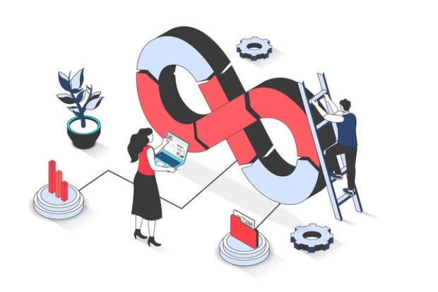

My Projects
Hey, check out some of my recent work! If you'd like to collaborate or discuss your specific project requirements, click the button below to connect.

Build-a-Byte
This CI/CD project aimed to automate the
software delivery pipeline, enhanced deployment frequency and
reduced time to market. By implementing robust continuous
integration and continuous deployment practices, I ensured
high-quality code releases with minimal manual intervention.
View On
Github

GroundControl
This project focused on using Terraform
and Terragrunt to manage and provision AWS infrastructure
efficiently, promoting Infrastructure as Code(IaC) best practices.
By leveraging modular configurations and automated workflows, I
aimed to enhance scalability and maintainability of our cloud
resources.
View On
Github

NetCraft
This project focused on designing a high
availability and scalable network infrastructure that supported
continuous integration and deployment processes. By implementing
redundant systems and automated scaling solutions, I aimed to
enhance reliability, performance, and overall system
resilience.
View On
Github
LambdaLand
This project involved leveraging AWS Lambda
to create a serverless web application that scales effortlessly to
meet user demands. It optimized resource management and streamlined
the development process, ensuring rapid deployment with minimal
overhead.
View On
Github
LAMPlify
This project involved automating the
deployment and configuration of a LAMP(Linux, Apache, MySQL, PHP)
stack using Ansible. By streamlining the setup process, it enabled
efficient management of web server resources and enhanced
productivity in development environments.
View On
Github
Need Help With Your Project?
If you're looking to collaborate on
your project, let's connect and build something amazing together! I’m
here to help turn your ideas into reality.